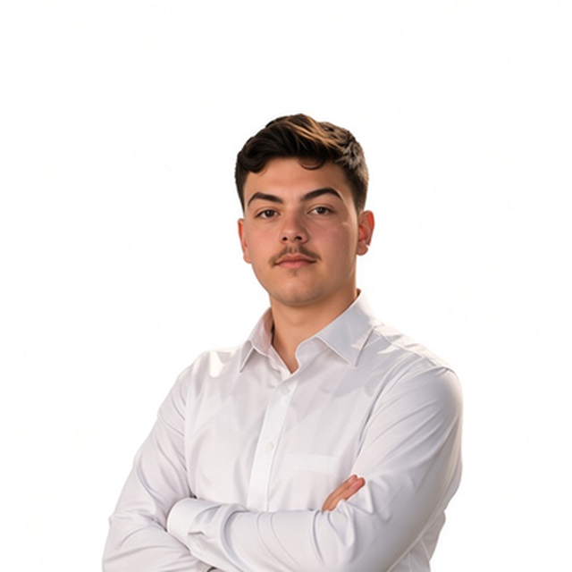
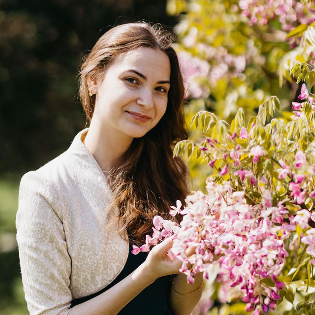
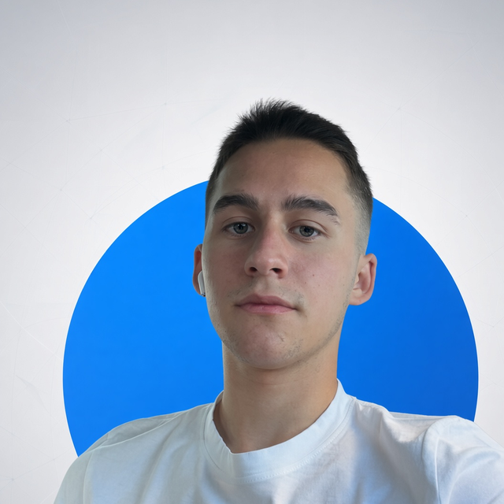

Grupul de inițiativă
Candidatura Fărcașa pentru titlul de Sat European de Tineret 2027
Povestea noastră
Totul a început când pe pagina de Facebook a comunei a apărut anunțul despre European Youth Village. Maria s-a înscris la etapa Learn de la Brașov, a revenit cu motivație și a mobilizat tinerii. Ne-am strâns în jur de 20 de tineri la caravana rurală; o parte dintre noi am ales să formăm grupul de inițiativă din Fărcașa, Sârbi, Buzești și Tămaia. Astăzi suntem finalistă în cursa pentru SET 2027 și pregătim planul de activități.
IT Tehnic și dezvoltare IT

Budea Daniel
Chair of IT
Coordonează departamentul tehnic, platforme digitale și monitorizare online

Ghita Sebastian
IT și Rețelistică
Dezvoltare, rețelistică, suport tehnic și conținut digital
PR Public Relations
Nistor Maria
Coordonatoare grup
Coordonare generală, reprezentare și strategii de comunicare
Ghiman Antonia
Coordonatoare grup
Coordonare, parteneriate și relații cu comunitatea

Cirț Giulia
Chair of PR
Strategie PR, media și social media
Pop Bianca
PR
Comunicare, evenimente media și content
LOG Logistică și organizare
Arnăuț Luca
Membru
Organizare evenimente și logistică pe teren

Armaș Damian
Membru
Planificare activități și resurse
Ghiman Cosmina
Membru
Suport organizare și relații cu participanții